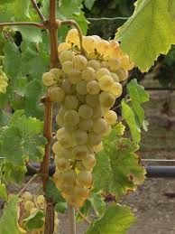

Chasselas
de Moissac


⟹ Produits du Terroir ⟸
Le Chasselas de Moissac est bien plus qu’un raisin de table : il est le premier fruit frais de France à avoir obtenu une Appellation d’Origine Contrôlée, en 1971. Cultivé sur les coteaux et terrasses qui dominent la confluence du Tarn et de la Garonne, ce raisin blanc aux grains dorés a fait la renommée de la cité abbatiale de Moissac, déjà célèbre pour son cloître roman inscrit au patrimoine mondial de l’UNESCO au titre des Chemins de Saint-Jacques-de-Compostelle.

Le chasselas est un cépage ancien, dont le nom est traditionnellement rattaché au village de Chasselas, dans le Mâconnais. Il a voyagé à travers toute l’Europe : en Suisse, il donne des vins blancs réputés, tandis qu’en France il s’est imposé comme raisin de table par excellence. Autour de Moissac, la vigne est présente depuis le Moyen Âge, dans l’orbite de la puissante abbaye Saint-Pierre et de ce port fluvial actif sur le Tarn.
C’est au XIXe siècle que le chasselas devient l’emblème de la ville. Le développement du chemin de fer permet d’expédier rapidement les grappes fragiles vers Paris et les grandes villes, où le « raisin de Moissac » gagne la table des familles aisées. Après la crise du phylloxéra, qui ravage le vignoble français à la fin du siècle, les coteaux sont replantés et les producteurs se spécialisent dans ce raisin de qualité, plus rémunérateur que le vin courant.
Les années 1930 marquent l’âge d’or de la cure uvale, une mode hygiéniste qui prête au raisin frais des vertus dépuratives et revitalisantes. Moissac se proclame alors « cité uvale » et se dote d’un Uvarium, élégant pavillon de style Art déco installé au bord du Tarn, où curistes et promeneurs viennent déguster le chasselas et boire son jus. Moissac reste aujourd’hui la seule ville de France à posséder un tel édifice, témoin de cette époque.
La reconnaissance officielle arrive en 1971 avec l’AOC, fruit de l’engagement collectif des producteurs — les chasselatiers et chasselatières. En 1996, l’Union européenne consacre l’Appellation d’Origine Protégée. Moissac est reconnu « Site Remarquable du Goût » en 2003, et depuis 2017 la culture du Chasselas de Moissac est inscrite à l’Inventaire national du patrimoine culturel immatériel.
L’aire de l’appellation couvre 76 communes du nord du Tarn-et-Garonne et du sud du Lot, à cheval sur deux régions naturelles : le Quercy et les coteaux de la région montalbanaise. Environ 230 producteurs y cultivent quelque 465 hectares. Selon les années, la récolte varie de 2 500 à 3 500 tonnes ; en 2026, année anniversaire des 30 ans de l’AOP et de l’entrée en vigueur d’un nouveau cahier des charges, les vendanges ont débuté dès le 12 août, avec deux à trois semaines d’avance.
Le savoir-faire des chasselatiers est minutieux. Les grappes sont cueillies à pleine maturité, entièrement à la main, puis passent par l’étape du ciselage : à l’aide de petits ciseaux, on retire un à un les grains abîmés ou insuffisamment mûrs pour ne garder que des grappes parfaites. Le raisin est ensuite délicatement rangé en plateaux. À la dégustation, le grain se révèle croquant, translucide, d’une grande finesse, avec une saveur sucrée aux notes de miel.
Une petite partie de la récolte est conservée en chambre froide jusqu’à la fin de l’année : le chasselas devient alors le « raisin de Noël », que l’on retrouve sur les tables de fêtes avec le foie gras. Chaque mi-septembre, la Fête des Fruits et des Saveurs réunit producteurs et visiteurs sur les allées de l’Uvarium autour d’une tarte géante au chasselas : la 35e édition s’est tenue les 12 et 13 septembre 2026.
Raisin de Noël : chasselas conservé en chambre froide après la récolte et proposé jusqu’aux fêtes de fin d’année, souvent servi avec le foie gras.
Foie gras poêlé au chasselas : grand classique du Sud-Ouest : les grains, rapidement poêlés et déglacés, accompagnent l’escalope de foie gras chaud.
Jus de chasselas : héritier direct de la cure uvale des années 1930, pressé à partir de grappes de l’appellation.
Confiseries et apéritifs : les artisans moissagais déclinent le chasselas en confiseries (grain doré, macarons) et en apéritifs à base de raisin.
Le Chasselas de Moissac se déguste de fin août à décembre, au plus près de ses coteaux de production.
Moissac capitale de l’appellation : l’Uvarium au bord du Tarn, le marché et le siège du Syndicat de défense du Chasselas, place de l’Uvarium.
Fête des Fruits et des Saveurs chaque mi-septembre à Moissac, marché gourmand de plus de 150 producteurs et tarte géante au chasselas.
Pays de Serres en Quercy autour de Lauzerte, village perché classé parmi les Plus Beaux Villages de France, où l’on achète directement aux chasselatiers.
Pays de Lafrançaise et des Deux Rives autres terroirs de l’appellation, avec de nombreuses exploitations familiales ouvertes à la vente directe.